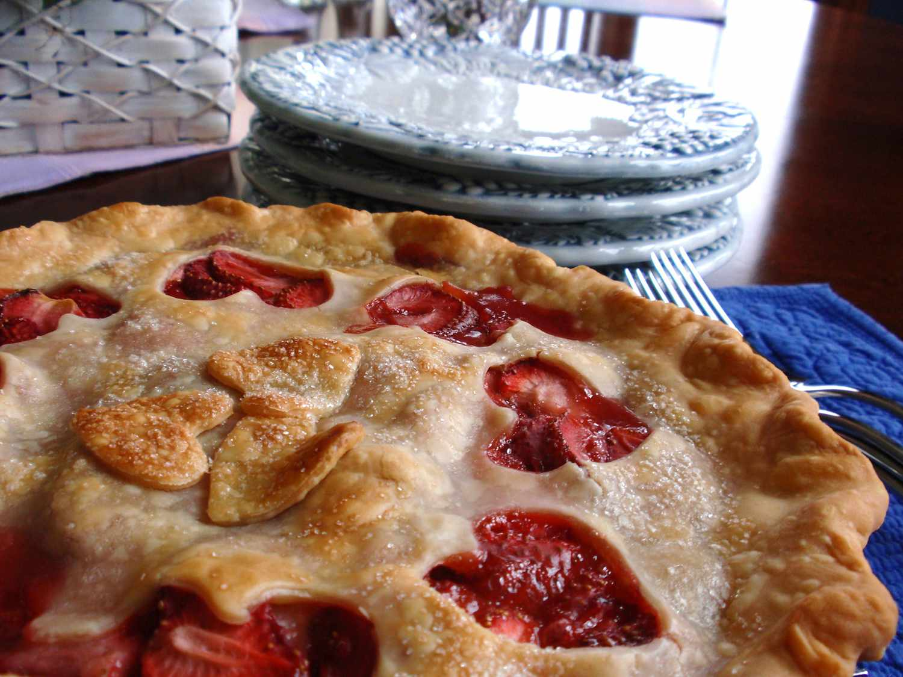

Old Fashioned Strawberry Pie

Nothing like an good ole'strawberry pie!
Step back in time with this delightful old-fashioned strawberry pie! Bursting with juicy, sun-kissed strawberries and nestled in a flaky, buttery crust, this pie is pure nostalgia on a plate. Perfect for warm summer days or a sweet treat any time of year, each slice promises a taste of homemade happiness and a sprinkle of love. Serve it up with a dollop of whipped cream and watch smiles bloom! 🌸🍓🥧
Ingredients:
- 2 (9-inch) unbaked pie crusts
- 1 ¼ cups white sugar
- ⅓ cup all-purpose flour
- ½ teaspoon ground cinnamon
- 4 cups fresh strawberries
- 2 tablespoons butter, cut into pieces
Steps:
- Preheat the oven to 425 degrees F (220 degrees C). Place 1 crust in the bottom of a 9-inch pie pan.
- Combine sugar, flour, and cinnamon in a bowl. Mix lightly through strawberries.
Combine sugar, flour, and cinnamon in a bowl. Mix lightly through strawberries.
- Pour filling into the pastry-lined pan and dot with butter pieces. Cover with top crust and cut slits in the top to vent. Seal and flute the edges.
- Bake in the preheated oven until the crust is slightly browned, 35 to 45 minutes.
Check out these other tasty recipes!